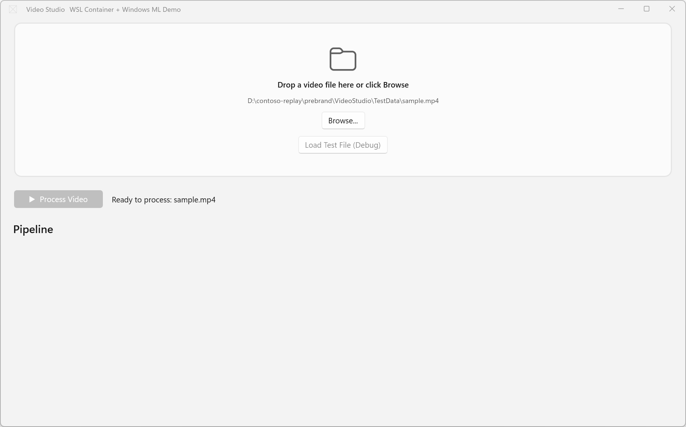
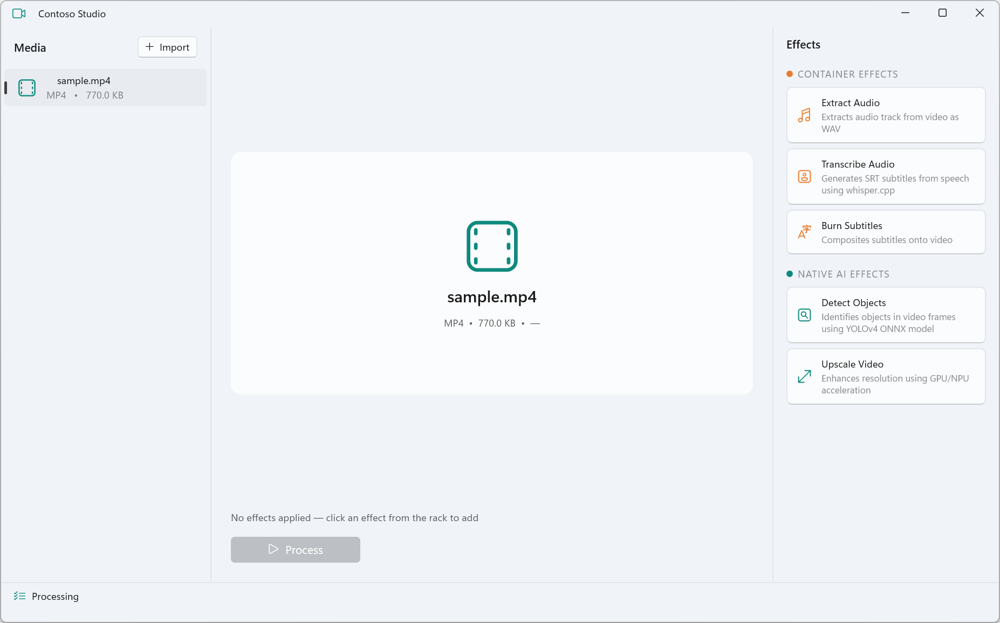
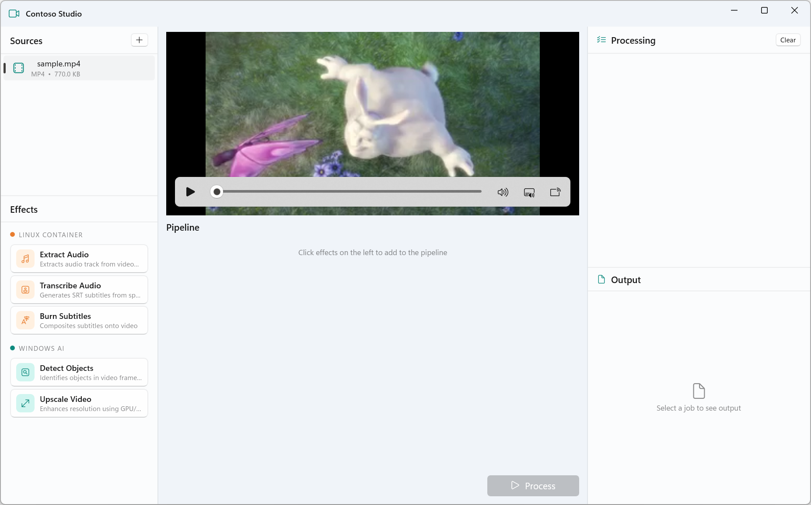
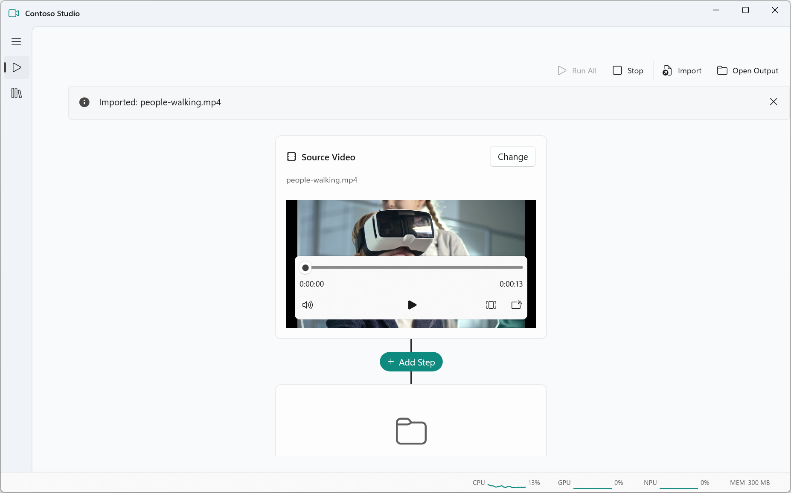
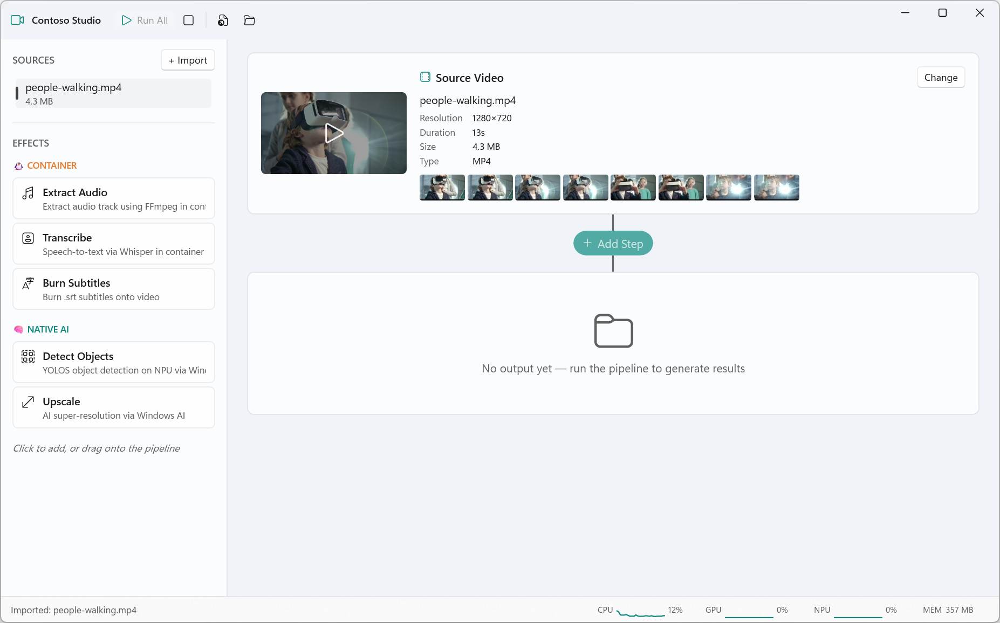
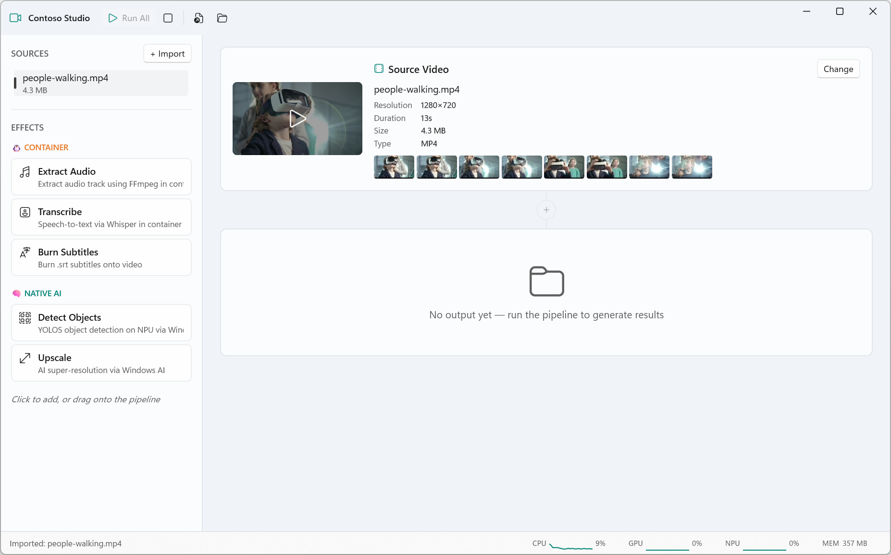
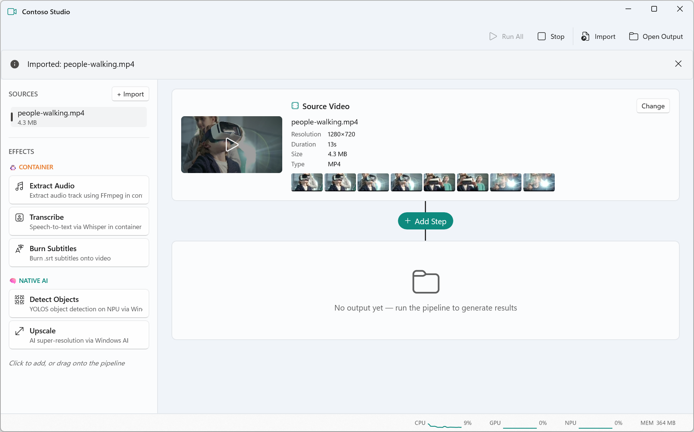
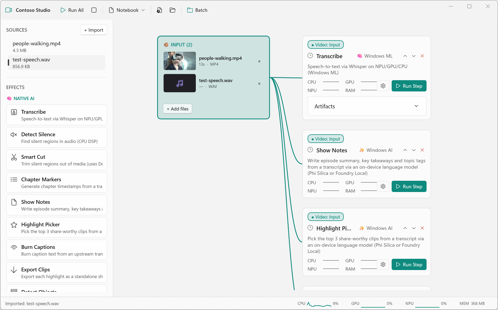
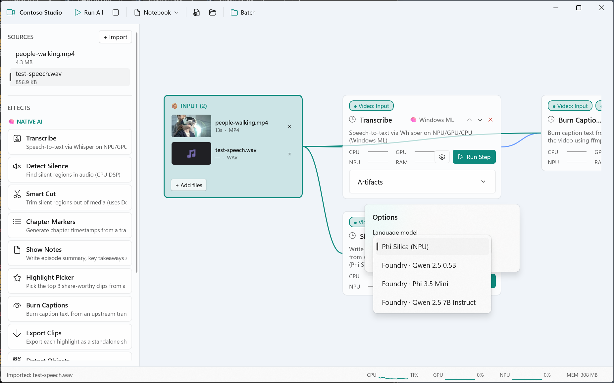

Built with prompts. Re-architected more than once. Still iterating.
The idea
No design. No mockup. Just a direction.
i was thinking of building a media application that uses a combination of ml models and media processing in containers… could I ask you to think about some realistic things we could do for the container side?
I described a vibe. Copilot proposed the scenario, picked the libraries, scaffolded the app.

Make it a real brand
One prompt. A whole identity.
right now it looks like a sample app — can we make it look like a real brand, can we design some ideas?
A name (Contoso Studio), a teal palette, an icon, a four-panel layout — all proposed in a single design pass.

The messy middle
A handful of prompts. Each one moved the app closer to "real."
can we have a nice preview/live playback… the titlebar is broken… nice drag and drop of effects… the panes need more separation
can we move things around — sources top, effects bottom, full progress on the right…
Iterating in plain English. Layout, polish, broken behavior, then a re-layout — all conversational, no rewrites needed.

Throw out the UI
A whole new metaphor — proposed in two prompts.
could we do a thing like a Jupyter notebook almost, but for video processing? Build your own pipeline with steps you can add, remove, move around, and see input/output directly inline.
big part of the goal is to demonstrate native winui — make it as pretty and winui-ey as possible, like a real production app for power users on a desktop.
Rewriting the UI was cheap. The metaphor changed in one conversation; the WinUI polish came in the next.

Notebook layout

WinUI-ey polish
Make it real, for real
The POC works and looks good. Now wire in actual hardware.
i need to make this as real as possible right now. let's try to get the yolo effect working — right now it falls back to demo and doesn't run on the npu.
From "demo mode" to real ONNX inference on the NPU via Windows ML + QNN. Hundreds of detections at 97% confidence, on the actual neural processor.

Skills do the heavy lifting
Asking the agent to use the right tool for the job.
seeing this — take a look and please use the ui-testing skill to get screenshots and inspect elements to debug until it works.
The agent can drive the app it just built. Inspect the visual tree, click buttons, grab screenshots, fix the bug — all in the same conversation.

…and pivot again
Outgrew the notebook. Went directed-graph.
can we review the flow of the "graph" — shouldn't there be an actual tree where outputs lead to multiple inputs into effects which can take multiple inputs? to make this more batchable…
Another full UI pivot. Buckets, parallel branches, wires you can pin. An afternoon, not a sprint.

Wire in Windows AI
Specific platform APIs, requested by name.
for the ones that use phi silica, could we maybe add a way to change the model to use things like foundry local so it can be configured?
Pluggable LLM backends in one prompt. Phi Silica on the NPU for built-in models, Foundry Local for anything else — same effect, swappable engine.

The takeaway
Why AI dev changes how you build WinUI apps.
You don't have to know what you want.
POC quickly. An idea-shaped prompt becomes a working app in one sitting.
Change your mind. Multiple UI pivots. One codebase. No regrets.
Wire it to real hardware. NPU, Phi Silica, Foundry Local — all asked for by name.
Skills do the heavy lifting. WinUI dev-workflow, design, UI-testing, packaging.
github.com/nmetulev/contoso-studio · built with Copilot CLI + WinUI 3 + Windows AI